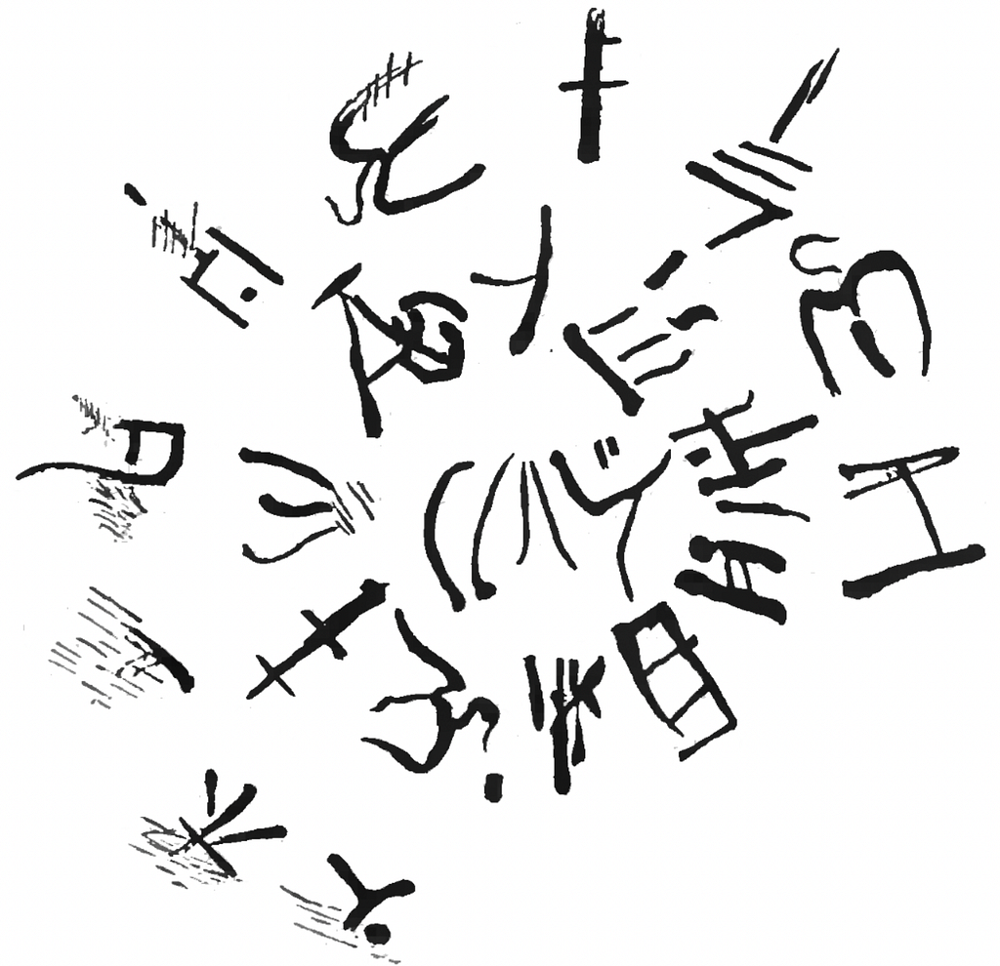
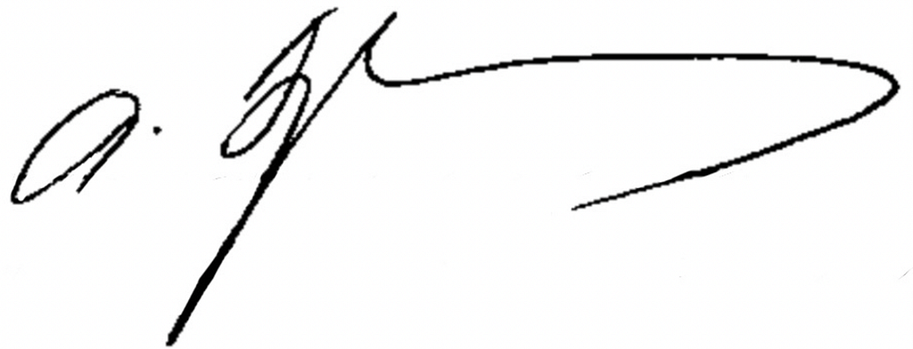
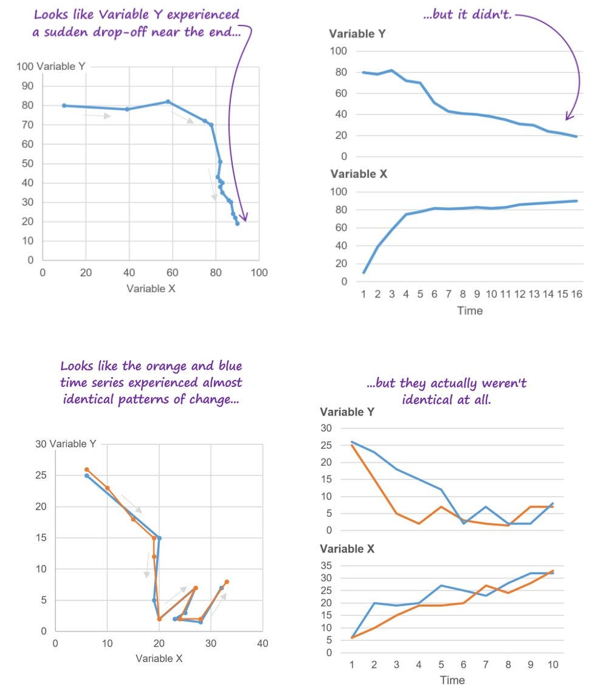
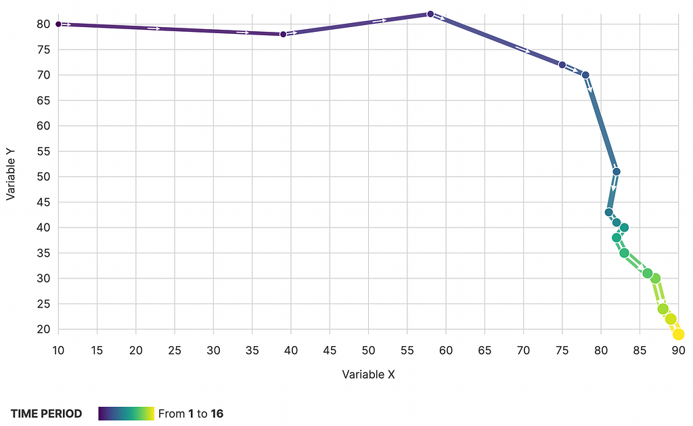
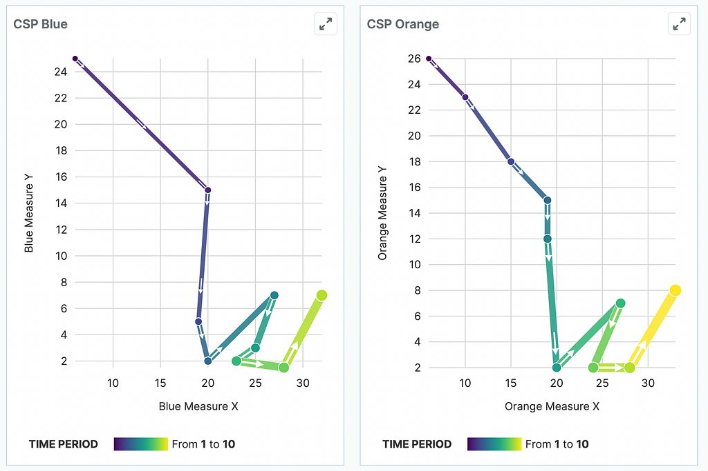

And what does unreadable really mean in a data visualization context?
Recently Nick Desbarats wrote a piece on Nightingale criticizing connected scatterplots as being less effective than traditional line charts for presenting time series data. In general, the arguments focus on the inaccessibility of the chart type (the title stating bluntly that they make Nick “feel dumb”) and how they are susceptible to misinterpretation not just because of the lack of familiarity among readers but also inherently in the way they present time series data.
What Makes Data Visualization Unreadable?
To address Nick’s first point we need to understand clearly what a chart is and why data visualization is such a powerful tool. For many people, data visualization is merely a data access problem and the goal of data visualization is to provide access (readability) to data as quickly and effectively as possible.
From that perspective, connected scatterplots will always be the wrong choice simply because they are unfamiliar to a broad audience. But if we consider charts to be forms of communication, then we can see just how limiting this perspective is. If we could only explain concepts to each other in the words we already know, then we would never have the level of scientific, engineering or even artistic expression that we enjoy as a society. There is an expectation in doing complex work that you will need to invest in learning new forms of communication whether philosophical terms, programming syntax, literary jargon or engineering concepts.
To answer the question “Are connected scatterplots unreadable?” we need to first understand what the word “unreadable” really means. There are two ways that a word can be unreadable: It is either so messily written (like a doctor’s signature) that you cannot make it out or it is so foreign that the word appears to us as collection of letters that doesn’t look like a word to us or, if it’s foreign enough, a collection of symbols that don’t even look like letters.


If it is purely the case that connected scatterplots are unreadable because of lack of familiarity, then it is simply a question of how we effectively design exotic charts to be more accessible, how we deliver educational material to help readers learn these new charts and how we encourage readers to not be intimidated by unfamiliar charts.
But What if Connected Scatterplots are Illegible?
Nick argues that it’s not an educational issue but, like a doctor’s signature, connected scatterplots are simply too messy and hard to read to be effective. He offers up these examples to support the claim.

Each of these seems compelling on first reading because the same marks and glyphs are used (colored lines, circles at vertices and some labeled axes) to produce seemingly confused results for connected scatterplots and more actionable results using traditional line charts.
Redesigning the Dropoff Connected Scatterplot
Let’s deal with the first chart showing what seems to be rapid dropoff. Using more encodings and a legend to show how time is encoded indicates that the temporal change is bunched in some parts of the chart and spread out in others.

What’s changed here to make the scatterplot more legible? It uses double-encoding (color along with circle size) to indicate the time period of each step that better highlights to the user the sudden change in the bunched up region that is not visible in Nick’s original version.
It’s also a better chart than the line chart because it highlights more clearly that there are two phases in this dataset:
- Phase 1 has Variable Y showing little variation with tremendous growth in Variable X. This only lasts for 5 Time Units.
- Phase 2 has Variable Y see consistent decline while Variable X stays constant.
These phases are not so distinct in the line chart where the lines (by virtue of the nature of the glyphs themselves being two distinct items) are read as separate pieces, forcing the viewer to read either the change in time of Variable X, the change in time of Variable Y or the correlation at a particular time step.
These Connected Scatterplots are Not the Same
Because of an unfamiliarity in the ambiguating features of this data visualization form, Nick created a second example where two different datasets superficially resemble each other when plotted as connected scatterplots. This can only happen if you don’t account for the particulars of this chart form where bunching and vectors can ambiguate change if there is an overdraw problem (points and lines crossing over each other too much).
But, if we use those same design features of double-encoding, we can clearly see that while these two datasets have two distinct phases in common, there are distinct differences in how those phases are achieved over time.

- Phase 1 shows consistent decline in Measure Y out of scale to decline in Measure X but in one dataset this happens over the course of 4 time units whereas in the other it happens over the course of 6 time units.
- Phase 2 shows higher variability increases and decreases in Measure Y (the same number though spread over different Time Units) while Measure X slowly increases.
Unreadable Does not Always Mean Bad
I’ve worked with connected scatterplots for a while and seen them work effectively and have impact in real-world usage. But because they are unfamiliar and a different way of explaining data than a line chart, they require different design work to make them effective. As someone who has made a circular treemap, I know there are some data visualization forms that just aren’t effective, but we do ourselves a disservice when we simply discard charts because we don’t know how to read them without asking ourselves if that lack of readability is based on inherent flaws in the chart or poor design that doesn’t take into account the fundamentals of the form.